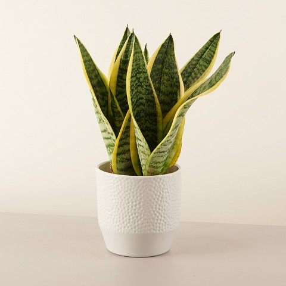

African Sword
Las hojas de la sansevieria parecen elevarse hacia el cielo, purificando el aire que está a su alrededor. Es una de las plantas más decorativas que existe y ofrece una bonita coloración multicolor en amarillo y verde que le da luz a cualquier estancia. Además, precisa de muy pocos cuidados. Ideal para… Iniciarse en la jardinería.